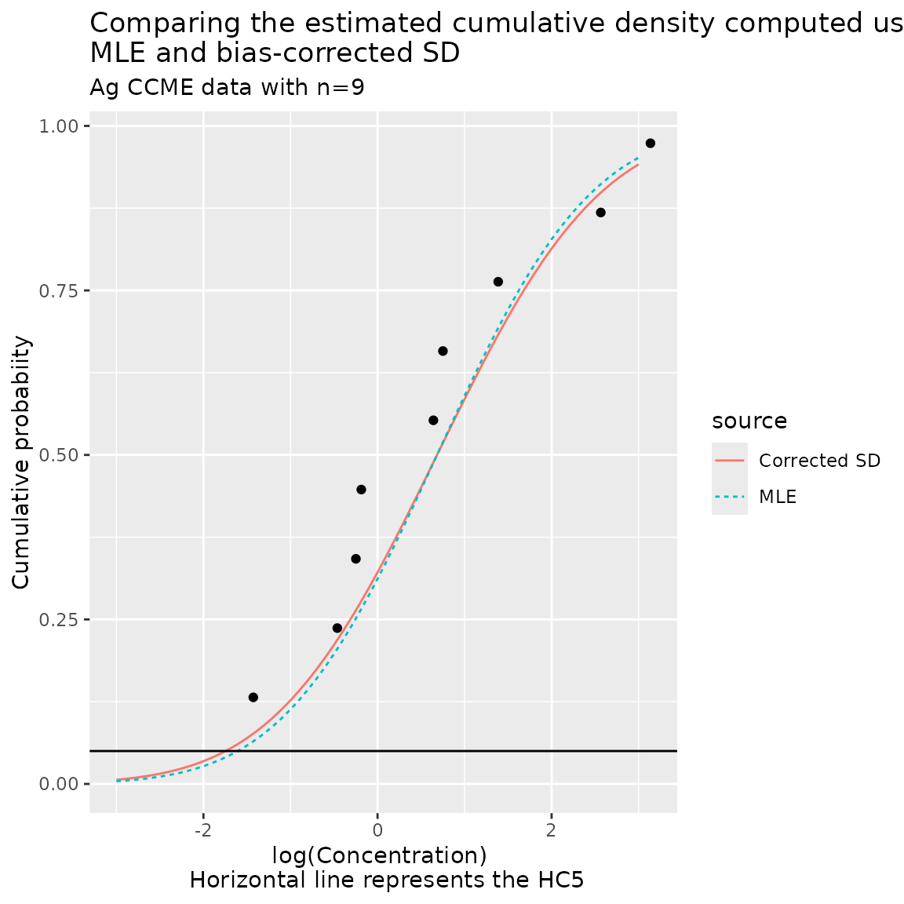
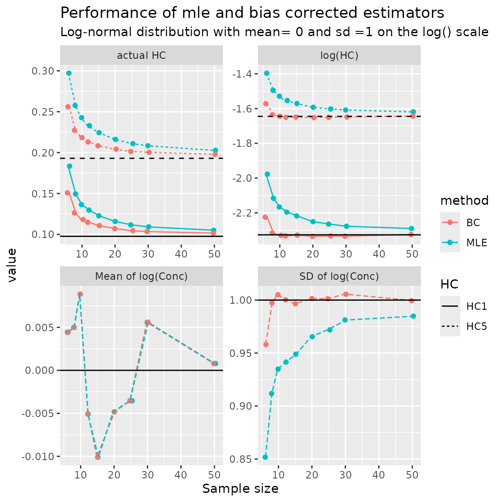
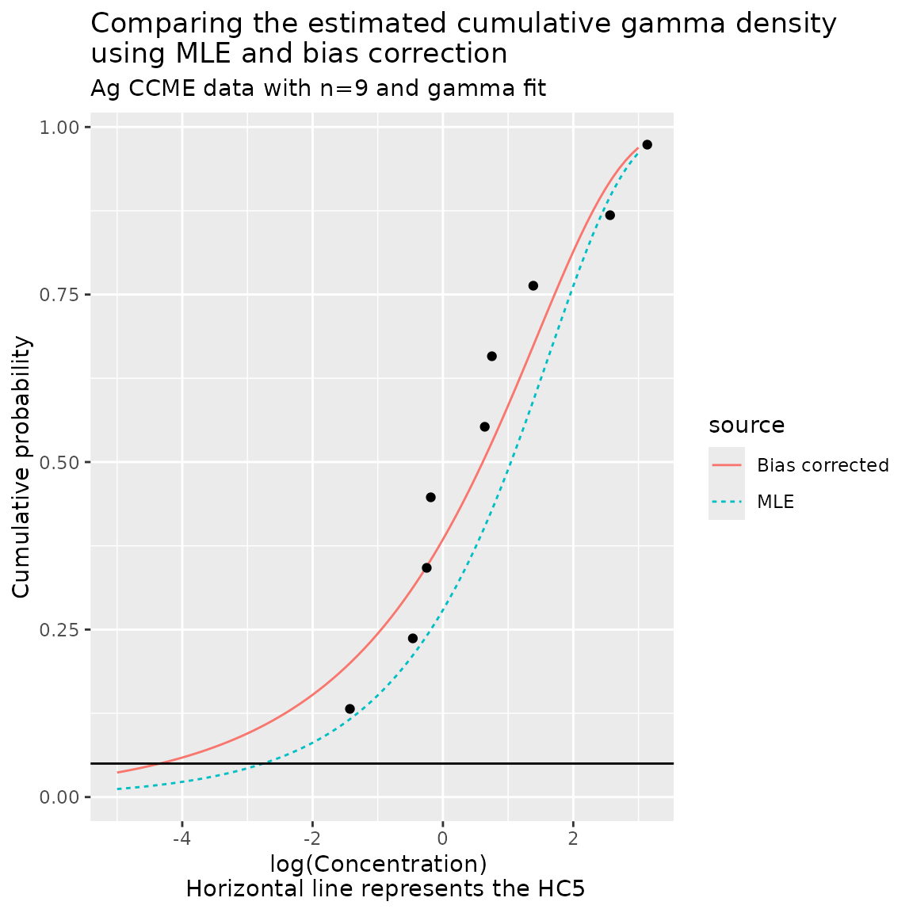
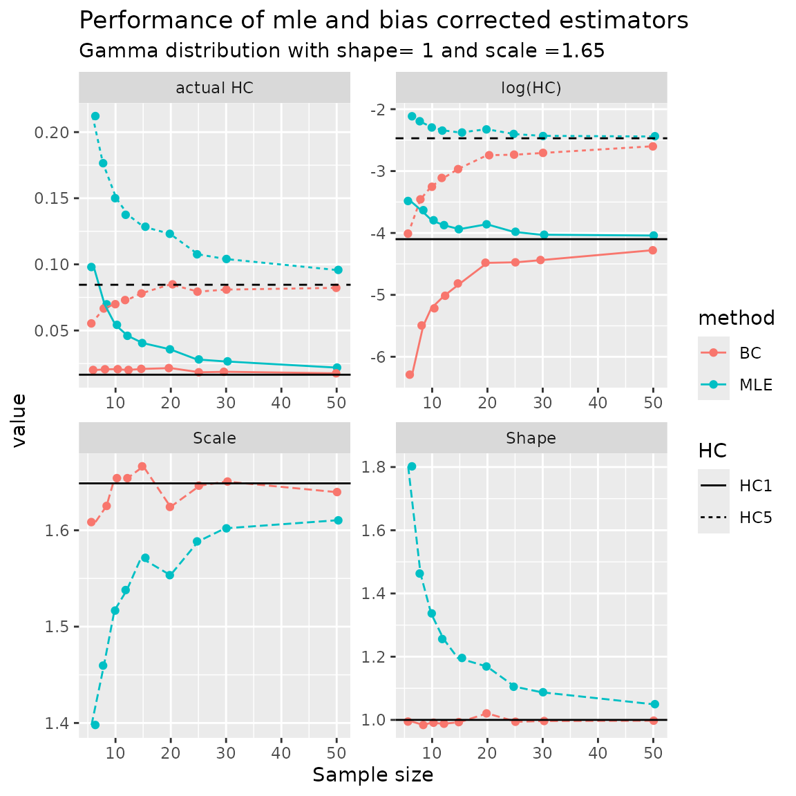

vignettes/small-sample-bias.Rmd
small-sample-bias.RmdThe ssdtools package uses the method of Maximum Likelihood (ML) to estimate parameters for each distribution that is fit to the data. Statistical theory says that maximum likelihood estimators are asymptotically unbiased, but does not guarantee performance in small samples.
For example, consider the CCME silver data that ships with ssdtools.
Ag <- ssddata::ccme_silver
Ag$ecdf <- (rank(Ag$Conc)+.25)/(nrow(Ag)+.5)
Ag## # A tibble: 9 × 7
## Chemical Species Conc Group Units Medium ecdf
## <chr> <chr> <dbl> <fct> <chr> <chr> <dbl>
## 1 Silver Oncorhynchus mykiss 0.24 Fish ug/L Freshwater 0.132
## 2 Silver Lemna gibba 0.63 Plant ug/L Freshwater 0.237
## 3 Silver Ceriodaphnia dubia 0.78 Invertebrate ug/L Freshwater 0.342
## 4 Silver Pimephales promelas 0.83 Fish ug/L Freshwater 0.447
## 5 Silver Ictalurus punctatus 1.9 Fish ug/L Freshwater 0.553
## 6 Silver Daphnia magna 2.12 Invertebrate ug/L Freshwater 0.658
## 7 Silver Hyalella azteca 4 Invertebrate ug/L Freshwater 0.763
## 8 Silver Chironomus tentans 13 Invertebrate ug/L Freshwater 0.868
## 9 Silver Micropterus salmoides 23 Fish ug/L Freshwater 0.974Let us fit a log-normal distribution to the Ag endpoint data and estimate the parameters:
fit <- ssd_fit_dists(Ag, dists="lnorm")
fit## Distribution 'lnorm'
## meanlog 0.684006
## sdlog 1.39222
##
## Parameters estimated from 9 rows of data.For most distributions, the MLE must be found numerically by iterative methods, but the log-normal distribution has easily computed estimators.
The meanlog parameter shown above represents the mean of the concentrations on the (natural) logarithmic scale and we can easily reproduce this value:
## [1] 0.6840072The sdlog parameter represents the standard deviation on the logarithmic scale, but the direct computation of the standard deviation gives a slightly different result:
## [1] 1.476673It turns out that in small samples, the MLE of the standard deviation for a log-normal distribution has a negative bias, i.e. the MLE tends to be smaller than the underlying true parameter value. The cause of this bias is found by comparing the formula for the MLE of the standard deviation and the traditional estimator for the standard deviation:
where is the sample size, are the , and is the sample mean concentration again on the logarithmic scale.
We notice that the MLE uses a divisor of while the traditional method uses a divisor of . Hence the MLE has a negative bias and its value is 0.94x the usual estimator for which is = 0.94 evaluated at = 9 .
As the sample size increases the absolute size of the bias will get smaller and smaller, i.e., if , then the MLE estimator is 0.97x the traditional estimator for which is neglible given the uncertainties in the actual end points.
Conversly, as the sample size decreases, the absolute size of the bias could become quite large, i.e., if , then the MLE is 0.87x the traditional estimator. But if you are fitting a species sensitivity distribution to only 4 data values, perhaps concern about bias in MLE is misplaced. Australian guidelines recommend a minimum sample size of 8 species.
If the standard deviation is underestimated, then the tails of the distribution will be pulled inwards and the HCx values will tend to be larger compared to the case where the standard deviation is not deflated as shown in the following plot:

The HC5 estimated from the MLE fit is -1.61 on the logarithmic concentrations scale or 0.201 on the concentration scale. The HC5 estimated after correcting the standard deviation for small sample bias is -1.74 on the logarithmic concentrations scale or 0.175 on the concentration scale. The ratio of HC5 values is 0.87x on the concentration scale, i.e. the estimated HC5 from the MLE is 1.1x larger than the HC5 computed using the bias correction.
The differences between the HCx computed from the MLE fit and using the corrected standard deviation will become more pronounced for small HCx values. For example, the HC1 estimated from the MLE fit is 0.078 and the HC1 estimated using the corrected standard deviation is 0.064 on the concentration scale. The ratio of the HC1 values is 0.82x on the concentrations scale, i.e. the estimated HC1 from the MLE is 1.2x larger than the HC5 computed using the bias correction.
A similar concernalso occurs with other distributions. Howeve, except for a few distributions, such as the normal distribution, analytical expressions for the MLE and for unbiased estimators do not exist. The mle.tools package from CRAN provides a method that numerically corrects the bias after the fit is completed.
For example, again using the Ag log-normal fit we have:
# apply the Cox and Snell (1968) bias correction using mle.tools.
# what is the density function
norm.pdf <- quote(1 / (sqrt(2 * pi) * sigma) * exp(-0.5 / sigma ^ 2 * (x - mu) ^ 2))
norm.pdf## 1/(sqrt(2 * pi) * sigma) * exp(-0.5/sigma^2 * (x - mu)^2)
# what is the log(density) function (ignoring constants)
log.norm.pdf <- quote(- log(sigma) - 0.5 / sigma ^ 2 * (x - mu) ^ 2)
log.norm.pdf## -log(sigma) - 0.5/sigma^2 * (x - mu)^2
bias.correct <- coxsnell.bc(density = norm.pdf,
logdensity = log.norm.pdf,
n = length(Ag$Conc),
parms = c("mu", "sigma"),
mle = c(estimates(fit)$lnorm.meanlog,
estimates(fit)$lnorm.sdlog),
lower = '-Inf', upper = 'Inf')
bias.correct## $mle
## mu sigma
## 0.6840056 1.3922187
##
## $varcov
## mu sigma
## mu 2.153637e-01 -4.458045e-14
## sigma -4.458045e-14 1.076818e-01
##
## $mle.bc
## mu sigma
## 0.6840056 1.5082369
##
## $varcov.bc
## mu sigma
## mu 2.527532e-01 -2.019001e-13
## sigma -2.019001e-13 1.263766e-01
##
## $bias
## mu sigma
## -2.863027e-12 -1.160182e-01The biased corrected value for the standard deviation is 1.51 which is comparable to the standard deviation of the log(concentration) found earlier of 1.48.
A small simulation study was conducted to investigate the effect of sample size on the bias correction and effects of the small-sample bias in the estimates of HC5 and HC1. For this simulation study, it was assumed that a log-normal distribution represented the distribution of endpoints among species with a mean of 0 and a standard deviation of 1 (on the logarithmic scale). These values are arbitrary, but any log-normal distribution can be rescaled (e.g. by changing units) to have this mean and standard deviation.
Simulated data sets at various sample sizes were generated, the MLE and bias-corrected estimates were obtained and these were used to estimate the HC5 and HC1 on the and anti-log scales. The average value of each response was then computed and plotted vs. the actual parameter values based on the known mean and standard deviation (shown in the plot below as a black horizontal line). For example, for a log-normal distribution with a mean of 0 and a standard deviation of 1 on the log-scale, the is the 0.05 quantile of the normal distribution or -1.645.
A plot of the results is:

The MLE is unbiased for the mean of the log-normal distribution (bottom left plot) - the apparent deviations from the true value of 0 are very small (note the scale on the axis) and simply simulation artefacts.
The MLE for the standard deviation is biased downwards (lower right plot) and the bias become smaller with increasing sample size (the curve for the mean of the MLE estimate of the standard deviation increases and approaches the true value of 0). The bias-correction for the standard deviation is effective for all but the smallest sample sizes.
The estimated (upper right plot) based on the MLE is biased upwards (i.e. larger) than the true values but the bias declines with sample size (as expected). The estimate of the based on the bias-corrected estimates performs well (close to the true value) except at very small sample sizes.
Finally, the estimated and values are again biased upwards (upper left plot). This bias consists of two parts
The total bias does not appear to be large except in the case of very small sample sizes.
We can also apply this to other distributions such as the gamma distribution. If we fit a gamma distribution to the Ag data we obtain:
fit.gamma <- ssd_fit_dists(Ag, dists="gamma")
fit.gamma## Distribution 'gamma'
## scale 8.08649
## shape 0.638925
##
## Parameters estimated from 9 rows of data.The bias corrected estimates are:
# apply the Cox and Snell (1968) bias correction using mle.tools.
# what is the density function
gamma.pdf <- quote(1 /(scale ^ shape * gamma(shape)) * x ^ (shape - 1) * exp(-x / scale))
gamma.pdf## 1/(scale^shape * gamma(shape)) * x^(shape - 1) * exp(-x/scale)
# what is the log(density) functiong ingoring constants
log.gamma.pdf <- quote(-shape * log(scale) - lgamma(shape) + shape * log(x) -
x / scale)
log.gamma.pdf## -shape * log(scale) - lgamma(shape) + shape * log(x) - x/scale
bias.correct.gamma <- coxsnell.bc(density = gamma.pdf,
logdensity = log.gamma.pdf,
n = length(Ag$Conc),
parms = c("shape", "scale"),
mle = c(estimates(fit.gamma)$gamma.shape,
estimates(fit.gamma)$gamma.scale),
lower = 0, upper = 'Inf')
bias.correct.gamma## $mle
## shape scale
## 0.6389255 8.0864943
##
## $varcov
## shape scale
## shape 0.06473953 -0.8194107
## scale -0.81941071 21.7436466
##
## $mle.bc
## shape scale
## 0.477672 8.840532
##
## $varcov.bc
## shape scale
## shape 0.03426316 -0.6341242
## scale -0.63412422 29.9155673
##
## $bias
## shape scale
## 0.1612535 -0.7540375The two cumulative density functions are:

The HC5 estimated from the MLE.gamma fit is -2.76 on the logarithmic concentrations scale or 0.063 on the concentration scale. The HC5 estimated after correcting for small sample bias is -4.35 on the logarithmic concentrations scale or 0.013 on the concentration scale. The ratio of these two HC5 values is 0.205x on the concentration scale, i.e. the HCx based on the MLE is 4.9x larger on the concentration scale.
The differences between the HCx computed from the MLE and for the bias corrected estimates will become more pronounced for small HCx values. For example, the HC1 estimated from the MLE.gamma fit is 0.005 and the HC1 estimated using the biased corrected estimates is 0.000446 on the concentration scale. The ratio of these two values is now 0.088x, i.e. the HCx based on the MLE is 11.4x larger on the concentration scale.
We repeated a similar simulation study with the gamma distribution. The shape and scale parameters were chosen to match the mean and variance of the log-normal distribution used in the previous simulation study.

The MLEs are biased in small-samples for both the shape and scale (bottom row of plots) but the small-sample bias declines as sample size increases (as expected). The biases of the two parameters are in opposite directions (i.e. one bias is positive and one bias is negative). The bias corrected estimates are unbiased (as expected).
The estimated (upper right plot) based on the MLE is slightly biased upwards (i.e. larger) than the true values but the bias rapidly declines with sample size (as expected). Rather surprisingly, the estimated HC5 and HC1 values using the bias-corrected estimates are biased downwards, likely an artefact of the non-linear transformation from scale and shape to the HCx.
Finally, the estimated and values are again biased upwards (upper left plot) based on the MLEs, but the estimated values based on the bias-corrected estimates appear to exhibit less bias despite the bias in the values.
In cases with reasonably large sample sizes (around 15+), the small sample bias is unlikely to be of concern given the uncertainty in the endpoints actually used for the fit, and the uncertainty generated for the HCx from the model averaging process.
The small sample bias in the estimates is expected to affect the smaller HCx values (e.g. HC1) more than larger HCx values (e.g. HC5). This is not unexpected because you are trying to extrapolate out to the extreme tails of the distribution where there is typically no data available and small changes to parameter values can have large impacts on the extreme tails.
For smaller sample sizes, a similar exercise as above can be used to estimate the impact of the small sample bias. Howeverr, for small sample sizes, this exercise may be akin to “fiddling while Rome burns”, i.e, this does not change the basic problems with small sample sizes including (a) most distributions will have adequate fits and it is unlikely be possible to discriminate between distributions; and (b) extrapolating even to a moderate tail fraction (e.g. HC5) is very, very dependent on the chosen distribution; (c) there is no data available to support even moderate extrapolation to tail proportions. Higher certainty in the estimates can only be obtained by increasing sample sizes.
Copyright 2018-2024 Province of British Columbia
Copyright 2021
Environment and Climate Change Canada
Copyright 2023-2024 Australian
Government Department of Climate Change, Energy, the Environment and
Water
The documentation is released under the CC BY 4.0 License
The code is released under the Apache License 2.0